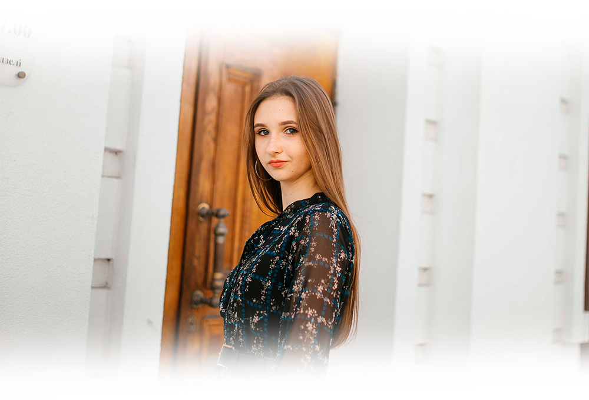
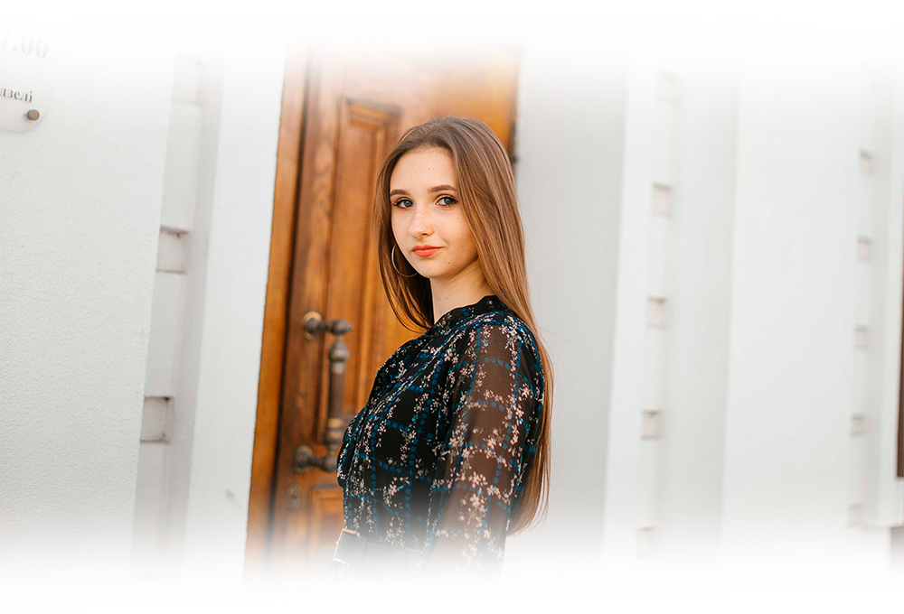

Настя Юркова
Настя №1
Настя №1
Как только мы встретились на тусовке Щорса, мне сразу стало понятно, что эта девочка будет одной из заводил.
Такая приколдесная девчуля не могла остаться в стороне от движа, который происходил буквально везде на первых
неделях учебы. Обожаю веселых и подвижных мадам!
И, как каждый из нас знает, Настя очень ответственная. Вот кто-кто, а она станет директором чего-то полезного. А
еще в придачу и замечательным лидером, ведь Настя всегда готова помочь! Спасибо, что помогала мне с АиП-ом!
Потому и не удивительно, что у Насти так много друзей и знакомых. Знай, что ты очень замечательная и открытая.
Пожалуйста, продолжай оставаться такой! ❤